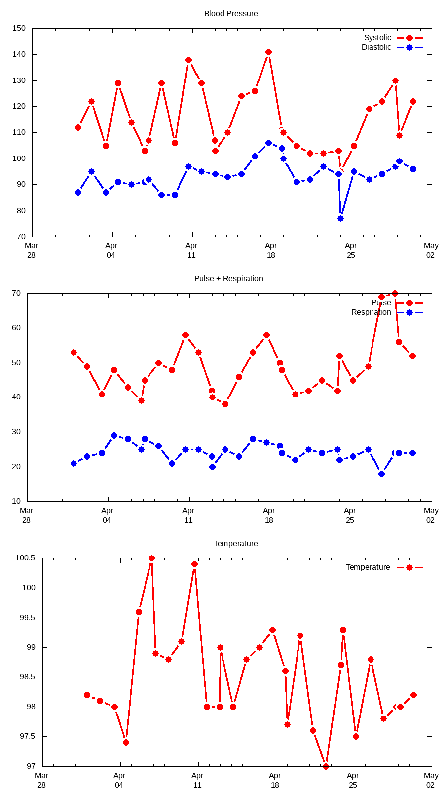

Vital
Signs**
**Disclaimer: This tool is for informational purposes only, and is not intended as a substitute for professional medical advice. Always seek input from a qualified health provider regarding any medical condition you may have. In case of a medical emergency, seek treatment immediately.
June 1, 2019: You can now specify what health metrics you’d like Vital Signs to track, and you can even make your own plots too! When you enter data into the skill, Vital Signs follows a “script” to prompt you for input. Here’s the default script:
What is your "blood pressure"? What is your "pulse", in beats per minute? What is your "respiration rate", in breaths per minute? What is your "temperature", in degrees Fahrenheit? #Systolic,Diastolic,Pulse,Respiration,Temperature
You can now replace that script with one of your own, simply by sending an email to welbydx@gmail.com and including the word “script” somewhere in the subject line. For example, here’s an email that changes the script to one that tracks your current weight and how many calories you’ve recently eaten:
From: Mary@xmail.com To: welbydx@gmail.com Subject: New vital signs script What is your current "weight" in pounds? What is your latest "calorie count"?
Vital Signs uses the words enclosed “in quotes” to build the confirmation message after you enter all of your data. Those words are also used as the column headings in your report.csv file, unless you specify a header line at the end of the script starting with a ‘#’, e.g. in the example above you might end the script with the line: #Pounds,Calories
In addition to specifying the health metrics you’d like Vital Signs to track, you can also design a custom plot for your data. Vital Signs uses gnuplot to produce its charts. You can replace the default gnuplot code in the same manner as the script. Simply email a new version of the code to welbydx@gmail.com, but this time specify the word “plot” somewhere in the subject line. For example, here’s an email that plots the pounds & calories data collected by the script above:
From: Mary@xmail.com To: welbydx@gmail.com Subject: New vital signs plot code set term png set datafile separator "," set xdata time set timefmt "%b-%d-%Y %H:%M:%S" set xtics timedate format "%b\n%d" set y2tics set key autotitle columnheader plot "report.csv" using 1:2 with linespoints, \ "" using 1:3 axes x1y2 with linespoints
Vital Signs is an Alexa skill that maintains a history of your primary vital signs – blood pressure, pulse, respiration rate, and body temperature – and emails you a file and chart of this data whenever you request it. To use Vital Signs, do the following:
First, enable the skill on your Echo device
Second, grant the skill permission to access your first name and the email address associated with your Amazon account. Vital Signs uses these to communicate with you during various skill interactions. To assign permissions, open the Alexa app – or login to alexa.amazon.com – then select: Skills > Your Skills > Vital Signs > Settings > Manage Permissions, and turn on the requested options.
Finally, ask Alexa to “open Vital Signs”, and create your account.
Vital Signs understands the following commands:
“Create account” will set up your initial Vital Signs account.
“Enter data” will prompt you for your current vital signs. These include your blood pressure (expressed as number “over” number), your pulse (in beats per minute), your respiration rate (in breaths per minute), and finally, your body temperature in degrees Fahrenheit (expressed as number “point” number).
“Send report” will email you a file (csv format) with your vital sign history, as well as a graph of the data. Samples of each of these are provided below. In addition to your own data, you’ll also receive the vital sign history file and graph for any user who has identified you as their proxy. See below for more information about proxies.
“Erase data” will clear out your entire vital sign history.
“Update proxies” will email you instructions for how to add or delete a proxy on your account.
“Delete account” will completely remove your Vital Signs account, any data stored under the account, and all of your proxy assignments.
We’ve all been in situations where we’d like to know how someone is doing, but we can’t be around to check on them. The Vital Signs proxy feature is meant to handle this. Let’s say Mary is currently a Vital Signs user, and John – Mary’s son – would like to access Mary’s data. Here’s how John (with Mary’s permission) can do this:
First, John needs to create his own Vital Signs account. John may not be interested in recording/tracking his own vital signs, but he still needs to have an account if he wants to read his mom’s data.
Next, Mary needs to give John permission to access her data, i.e. she must designate John as a proxy. To do this, Mary opens Vital Signs, and tells the assistant she wants to update her proxy info. The skill then sends Mary an email message that lists her current proxies, and gives instructions for sending a reply that adds (or deletes) a proxy on her account. Mary then submits a reply adding John as a proxy. Afterwards, Mary can ask Vital Signs to resend her proxy info, so she can confirm that John has been added to her proxy list.
Lastly, once John has been named as Mary’s proxy, then whenever he asks Vital Signs to send a report, the skill will send John both his own data, as well has his mom’s.

There is no limit on the number of proxies a user can associate with his/her account. Thus, for example, if Mary had other children she could make all of them proxies. Similarly, there is no restriction on the number of times a single user can be named as a proxy for someone else. So, for example, if John also wants to keep tabs on his dad, Jim, then Jim can also name John as a proxy on his (Jim’s) account.
Here are examples of the Vital Signs history file (report.csv) and graph (report.png):
report.csv:
Date,Systolic,Diastolic,Pulse,Respiration,Temperature
Apr-01-2019 00:00:00,112,87,53,21,98.2
Apr-02-2019
04:00:00,122,95,49,23,98.1
Apr-03-2019 11:00:00,105,87,41,24,98
Apr-04-2019 12:00:00,129,91,48,29,97.4
Apr-05-2019
16:00:00,114,90,43,28,99.6
Apr-06-2019
20:00:00,103,91,39,25,100.5
Apr-07-2019
04:00:00,107,92,45,28,98.9
Apr-08-2019
08:00:00,129,86,50,26,98.8
Apr-09-2019
12:00:00,106,86,48,21,99.1
Apr-10-2019
16:00:00,138,97,58,25,100.4
Apr-11-2019
19:00:00,129,95,53,25,98
Apr-12-2019
23:00:00,107,94,42,23,98
Apr-13-2019
00:00:00,103,94,40,20,99
Apr-14-2019
03:00:00,110,93,38,25,98
Apr-15-2019
08:00:00,124,94,46,23,98.8
Apr-16-2019
12:00:00,126,101,53,28,99
Apr-17-2019
16:00:00,141,106,58,27,99.3
Apr-18-2019
20:00:00,111,104,50,26,98.6
Apr-19-2019
00:00:00,110,100,48,24,97.7
Apr-20-2019
04:00:00,105,91,41,22,99.2
Apr-21-2019
08:00:00,102,92,42,25,97.6
Apr-22-2019
12:00:00,102,97,45,24,97
Apr-23-2019
20:00:00,103,94,42,25,98.7
Apr-24-2019 00:00:00,95,77,52,22,99.3
Apr-25-2019 04:00:00,105,95,45,23,97.5
Apr-26-2019
12:00:00,119,92,49,25,98.8
Apr-27-2019
16:00:00,122,94,69,18,97.8
Apr-28-2019 20:00:00,130,97,70,24,98
Apr-29-2019 04:00:00,109,99,56,24,98
Apr-30-2019
08:00:00,122,96,52,24,98.2
report.png:

I’ve been interested in math and computer science ever since earning degrees in these fields almost 40 years ago. Later, I acquired an interest in medicine after being diagnosed with a condition called “Lynch Syndrome” which predisposes me to a whole assortment of cancers. Vital Signs is my attempt to integrate all of these diverse interests in the development of a modern voice assistant skill.
Those of us who’ve been diagnosed with any sort of chronic medical condition like to keep close tabs on our health, and stay on the lookout for early warning signs of disease. Most diagnostic tests require a doctor’s prescription, so they’re not directly accessible to patients. Hence, patients like myself try to make best use of tests and data that is within our reach. This data is generally termed “Patient-Generated Health Data (PGHD)”. Unfortunately, health metrics that are readily available to patients oftentimes aren’t the most sensitive or specific indicators of complex disease. It is my hope and belief, however, that advances in artificial intelligence/machine learning (AI/ML) may start to change this, as new insights are gleaned from data that had previously been under analyzed.
Not everyone may share my enthusiasm for tracking health data. What portion of the population are interested in collecting and recording their health data? What are the best metrics to collect? Is voice assistant technology the right platform for this? If people do embrace voice assistants for this purpose, how well will they adhere to a regular reporting schedule? These are all questions that Vital Signs may help to answer.
This privacy notice applies to the Vital Signs Alexa skill. In general it covers:
What personally identifiable information (PII) is collected while using the skill, how it is used, and with whom it is shared.
The security controls in place to protect your information.
How you can administer your information.
Vital Signs is intended for personal use. The information you share with the skill – your first name, email address, and vital sign data – is not sold or otherwise shared with any commercial entity. Only you, your designated proxies, and myself (as system administrator) have access to the data.
A variety of security controls have been implemented to protect your data:
Your vital sign information is stored on a virtual private server (VPS) that is physically hosted and secured by Amazon Web Services (AWS).
The Vital Signs account on the VPS is locked down so it is only accessible to the system administrator (me).
Your name and email address are stored as clear text on the server, but your vital sign history file is encrypted on disk using the Linux ccrypt utility. The encryption key is not stored locally, but is passed to the server by the Alexa skill.
Whenever your data is transmitted across a network (e.g. during HTTP and SMTP sessions), it is encrypted using TLS.
The skill uses gmail to send/receive email. All email folders associated with the administrator account are purged daily.
If at any time you’d like to remove your information from the system, simply ask the skill to erase your data, which removes just your history file, or to delete your account, which removes everything about you: your name, email address, and vital sign history.
It’s worth saying a word about HIPAA. HIPAA stands for the “Health Insurance Portability and Accountability Act”. It’s a law passed back in 1996 that mandates certain data privacy and security provisions to safeguard medical information. Does HIPAA apply to information that a patient submits to a health app like Vital Signs, and if so, how? Thankfully, the Department of Health and Human services has already considered this scenario, and published guidelines on their website to assist app developers. According to those guidelines, the Vital Signs skill is not subject to HIPAA regulations. Here’s an excerpt from the guidelines:
Scenario:
Consumer downloads a health app to her smartphone. She populates it with her own information. For example, the consumer inputs blood glucose levels and blood pressure readings she obtained herself using home health equipment.
Based on the Facts Presented in the Scenario, Is App Developer a HIPAA Business Associate?
No. Developer is not creating, receiving, maintaining or transmitting protected health information (PHI) on behalf of a covered entity or another business associate. The consumer is using the developer’s app to help her manage and organize her information without any involvement of her health care providers.
I’d appreciate your feedback on the skill. Feel free to email me your comments at welbydx@gmail.com.